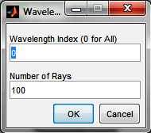
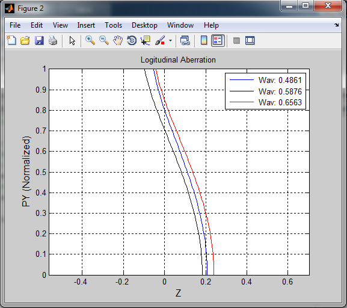

As the new feature is not integrated in to the main toolbox, it can not be used from the GUI of the toolbox, rather it can be accessed only from command window writing a matlab script. To test the new longitudinal aberration diagram, the following test script was written;
% Test script for plotLongitudinalAberration.m function
% Read the double gauss system
% Open saved optical system
% Get path of the single lens system used for testing
doubleGauss28 = which('DoubleGauss28.mat');
% Construct the optical system object from the saved file
OS = OpticalSystem(doubleGauss28);
plotLongitudinalAberration(OS);
Setting Window:

Graphical Longitudinal Ray Aberration Diagram Window:

Created with the Personal Edition of HelpNDoc: Produce electronic books easily